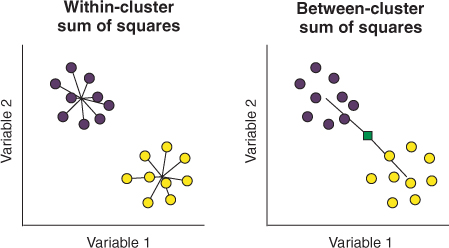
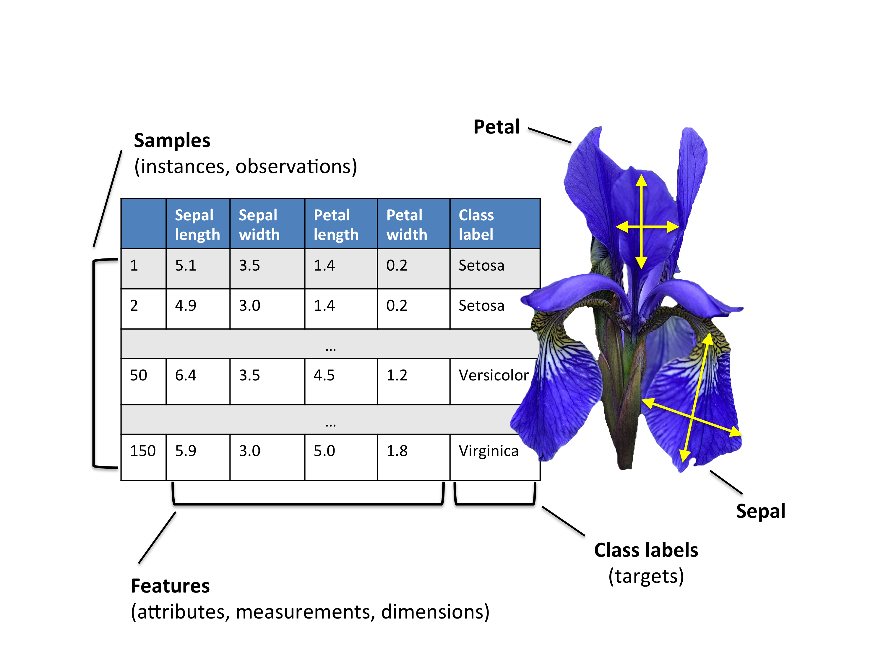

# You can import directly from my website (instead of downloading it..)
ligue1 <- read.csv("http://www.mghassany.com/MLcourseEfrei/datasets/ligue1_17_18.csv", row.names=1, sep=";")Lab on \(k\)-means and Hierarchical clustering
- You are free to apply this lab in or Python.
- In Python, you can use
sklearn.clustermodule in which you can find the most famous clustering techniques. For this lab, we will needKMeans()andAgglomerativeClustering(). You can read the interesting documentation here. -
kmeans()andhclust()are implemented by default in base.
Markdown
In this part we will learn how to create a report in Rstudio using Rmarkdown files. Then we will apply the \(k\)-means clustering algorithm using the standard function kmeans() in . While in Python, you can instead use Jupyter to create a notebook. You can modify the type of the cells to markdown and then execute them to get an html output.
Markdown is a lightweight markup language with plain text formatting syntax designed so that it can be converted to HTML and many other formats (pdf, docx, etc..).
Click here to see an example of a markdown (.md) syntaxes and the result in HTML. The markdown syntaxes are on right and their HTML result is on left. You can modify the source text to see the result.
Tip
There is some markdown online editors you can use, like dillinger.io/. See the Markdown source file and the HTML preview. Play with the source text to see the result in the preview.
R Markdown
R Markdown is a variant of Markdown that has embedded code chunks, to be used with the knitr package to make it easy to create reproducible web-based reports.
First, in Rstudio create a new R Markdown file. A default template will be opened. There is some code in R chunks. Click on knit, save your file and see the produced output. The output is a html report containing the results of the codes. If your file is named report.Rmd, your report is named report.html.
- Make sure to have the latest version of
Rstudio. (Recent versions of Rstudio have also a visual editor, see here) - If you have problems creating a
R Markdownfile (problem in installing packages, etc..) close yourRstudioand reopen it with administrative tools and retry.
You can find all the informations about R Markdown on this site: rmarkdown.rstudio.com.
You may also find the following resources helpful:
The YAML header
In Rstudio, start by creating a R Markdown file. When you create it a default template will be opened with the following first lines:
---
title: "Untitled"
output: html_document
---These lines are the YAML header in which you choose the settings of your report (title, author, date, appearance, etc..)
For example, you can use the following YAML header:
---
title: "Machine Learning Lab"
subtitle: "Clustering"
author: LastName FirstName
date: "`#r format(Sys.time())`" # remove the # to show the date
output:
html_document:
toc: true
toc_depth: 2
theme: flatly # you can modify the theme, check the available themes on Rstudio's website
---
Important
Very Important Remark: Click on the settings button of Rstudio’s text editor and choose to Chunk Output in Console.

Tip
To compile your report, click on knit or use the keyboard shortcut ctrl + shift + k (cmd + shift + k on mac).
\(k\)-means clustering
In this lab, we will use the dataset Ligue1 2017/2018.
1. Download the dataset: Ligue1 2017/2018 🔢 and import it. Be aware that the teams’ names are in the first column. You can put the argument row.names to 1 in R.
2. Print the first two rows of the dataset and the total number of features in this dataset.
Tip
In R, you can create an awesome HTML table by using the function kable from the knitr library. For example, if you want to show the first 5 lines and 5 columns of your dataset, you can use knitr::kable(ligue1[1:5,1:5]). Give it a try and see the result on your html report!
pointsCards
3. We will first consider a smaller dataset to easily understand the results of \(k\)-means. Create a new dataset in which you consider only Points and Yellow.cards from the original dataset. Name it pointsCards
4. Apply \(k\)-means on pointsCards. Chose \(k=2\) clusters and put the number of iterations to 20. Store your results into km. (Remark: kmeans() uses a random initialization of the clusters, so the results may vary from one call to another. Use set.seed() to have reproducible outputs).
5. Print and describe what is inside km.
6. What are the coordinates of the centers of the clusters (called also prototypes or centroids) ?
7. Plot the data (Yellow.cards vs Points). Color the points corresponding to their cluster.
8. Add to the previous plot the clusters centroids and add the names of the observations.
9. Re-run \(k\)-means on pointsCards using 3 and 4 clusters and store the results into km3 and km4 respectively. Visualize the results like in question 7 and 8.
Important
How many clusters \(k\) do we need in practice? There is not a single answer: the advice is to try several and compare. Inspecting the ‘between_SS / total_SS’ for a good trade-off between the number of clusters and the percentage of total variation explained usually gives a good starting point for deciding on \(k\) (criterion to select \(k\) similar to PCA).
There is several methods of computing an optimal value of \(k\) with code on following stackoverflow answer: here .
10. Visualize the “within groups sum of squares” of the \(k\)-means clustering results (use the code in the link above).

11. Modify the code of the previous question in order to visualize the ‘between_SS / total_SS’. Interpret the results.
Ligue 1
So far, you have only taken the information of two variables for performing clustering. Now you will apply kmeans() on the original dataset ligue1. Using PCA, we can visualize the clustering performed with all the available variables in the dataset.
By default, kmeans() does not standardize the variables, which will affect the clustering result. As a consequence, the clustering of a dataset will be different if one variable is expressed in millions or in tenths. If you want to avoid this distortion, use scale to automatically center and standardize the dataset (the result will be a matrix, so you need to transform it to a data frame again).
12. Scale the dataset and transform it to a data frame again. Store the scaled dataset into ligue1_scaled.
13. Apply kmeans() on ligue1 and on ligue1_scaled using 3 clusters and 20 iterations. Store the results into km.ligue1 and km.ligue1.scaled respectively (do not forget to set a seed)
14. How many observations there are in each cluster of km.ligue1 and km.ligue1.scaled ? (you can use table()). Do you obtain the same results when you perform kmeans() on the scaled and unscaled data?
PCA
15. Apply PCA on ligue1 dataset and store you results in pcaligue1. Do we need to apply PCA on the scaled dataset? Justify your answer.
16. Plot the observations and the variables on the first two principal components (biplot). Interpret the results.
17. Visualize the teams on the first two principal components and color them with respect to their cluster.
# You can use the following code in R, based on `factoextra` library.
fviz_cluster(km.ligue1, data = ligue1, # km.ligue1 is where you stored your kmeans results
palette = c("red", "blue", "green"), # 3 colors since 3 clusters
ggtheme = theme_minimal(),
main = "Clustering Plot"
)18. Recall that the figure of question 17 is a visualization with PC1 and PC2 of the clustering done with all the variables, not on PC1 and PC2. Now apply the kmeans() clustering taking only the first two PCs instead the variables of original dataset. Visualize the results and compare with the question 17.
Tip
By applying \(k\)-means only on the PCs we obtain different and less accurate result, but it is still an insightful way.
Implementing k-means
In this part, you will perform \(k\)-means clustering manually, with \(k=2\), on a small example with \(n=6\) observations and \(p=2\) features. The observations are as follows.
| Observation | \(X_1\) | \(X_2\) |
|---|---|---|
| 1 | 1 | 4 |
| 2 | 1 | 3 |
| 3 | 0 | 4 |
| 4 | 5 | 1 |
| 5 | 6 | 2 |
| 6 | 4 | 0 |
19. Plot the observations.
20. Randomly assign a cluster label to each observation. You can use the sample() command in to do this. Report the cluster labels for each observation.
21. Compute the centroid for each cluster.
22. Create a function that calculates the Euclidean distance for two observations.
23. Assign each observation to the centroid to which it is closest, in terms of Euclidean distance. Report the cluster labels for each observation.
24. Repeat 21 and 23 until the answers obtained stop changing.
25. In your plot from 19, color the observations according to the cluster labels obtained.
Hierarchical clustering
Distances dist()
To calculate the distance in we use the dist() function. Here is a tutorial of how use it.
# Generate a matrix M of values from 1 to 15 with 5 rows and 3 columns
M <- matrix(1:15,5,3)
M [,1] [,2] [,3]
[1,] 1 6 11
[2,] 2 7 12
[3,] 3 8 13
[4,] 4 9 14
[5,] 5 10 15# - Compute the distance between rows of M.
# - The default distance is the euclidian distance.
# - Since there are 3 columns, it is the euclidian
# distance between tri-dimensional points.
dist(M) 1 2 3 4
2 1.732051
3 3.464102 1.732051
4 5.196152 3.464102 1.732051
5 6.928203 5.196152 3.464102 1.732051# To compute the Manhattan distance
dist(M, method= "manhattan") 1 2 3 4
2 3
3 6 3
4 9 6 3
5 12 9 6 3Dendrogram hclust()
Hierarchical clustering on Iris dataset

1. Download the iris dataset from here 🔢 and load it.
2. Choose randomly 40 observations of the iris dataset and store the sample dataset into sampleiris.
3. Calculate the euclidean distances between the flowers. Store the results in a matrix called D. (Remark: the last column of the dataset is the class labels of the flowers)
4. Construct a dendrogram on the iris dataset using the method average. Store the result in dendro.avg.
5. Plot the dendrogram.
6. Plot again the dendrogram using the following command:
plot(dendro.avg, hang=-1, label=sampleiris$class)7. To cut the dendrogram and obtain a clustering use the cutree. You can choose the number of clusters you wish to obtain, or you can cut by choosing the height from the dendrogram figure. Cut the dendrogram in order to obtain 3 clusters. Store the results into vector groups.avg.
8. Visualize the cut tree using the function rect.hclust(). You can choose the colors of the rectangles too!
9. Compare the obtained results obtained with Hierarchical clustering and the real class labels of the flowers (function table()). Interpret the results.
Bonus: You can cut the tree manually (on demand!). To do so, plot a dendrogram first then use the function identify(). On the figure, click on the clusters you wish to obtain. Then hit Escape to finish.
10. Now apply the Hierarchical clustering on the iris dataset (the 150 observations). Choose 3 clusters and compare the results with the real class labels. Compare different methods of Hierarchical clustering (average, complete and single linkages).
◼